Planning our subpages
Sub-Pages
- Sub-Page Template
- Sub-Page Prize corner
- Sub-Page Donations (including food, money, hamper donations)
- Sub-Page Set up (only include times)
Sitemap
- 1. Homepage
- Sub-Page Prize corner
- Sub-Page Donations (including food, money, hamper donations)
- Sub-Page Set up (only include times)
Subpages
Donation Subpage
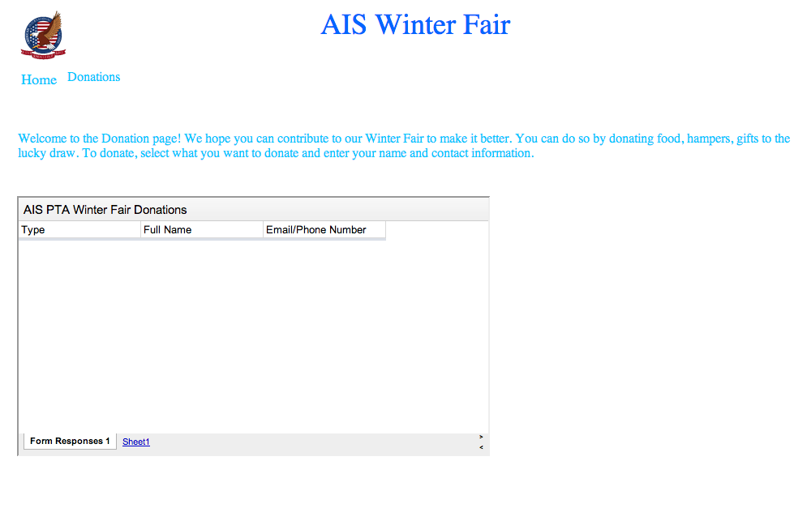
Setup Subpage
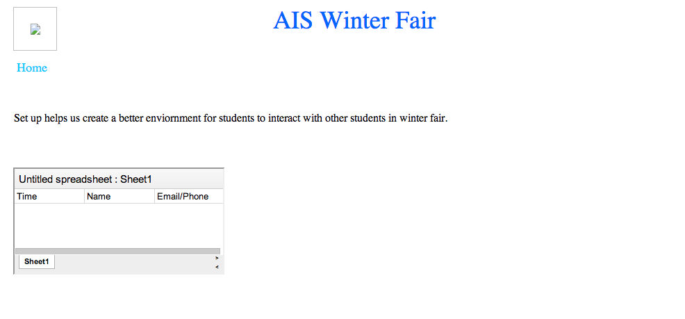
Prize Corner Subpage
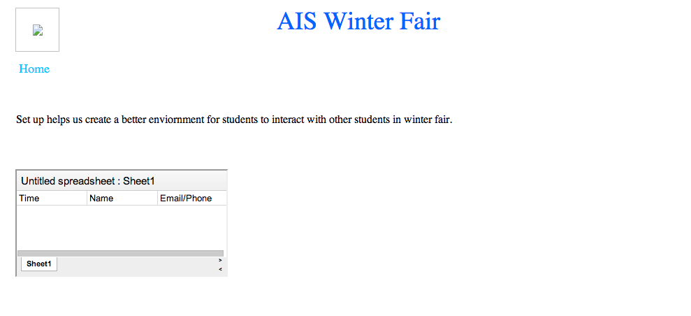
Wireframe for template
WireFrame 1
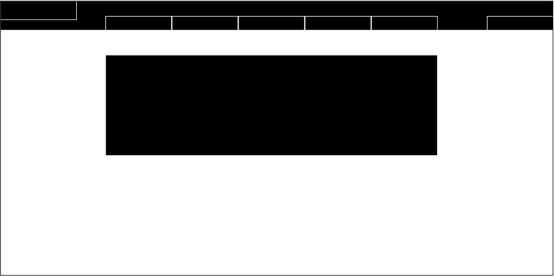
WireFrame 2
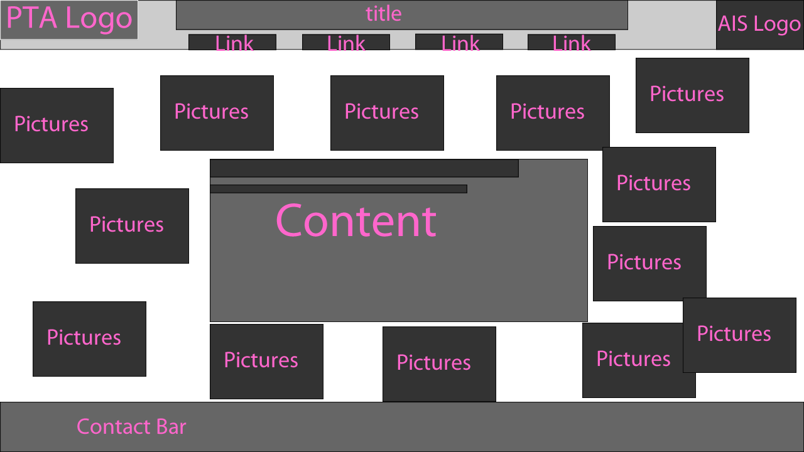
WireFrame 3
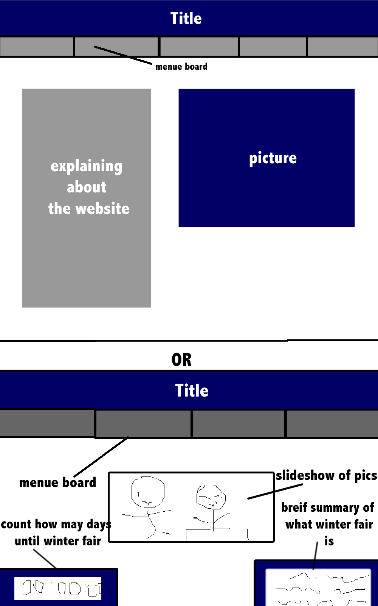
WireFrame 4
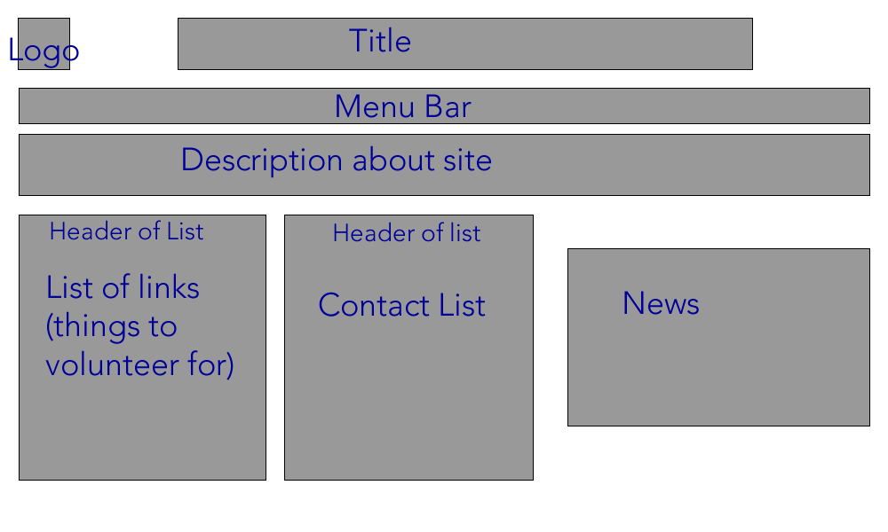
WireFrame 5
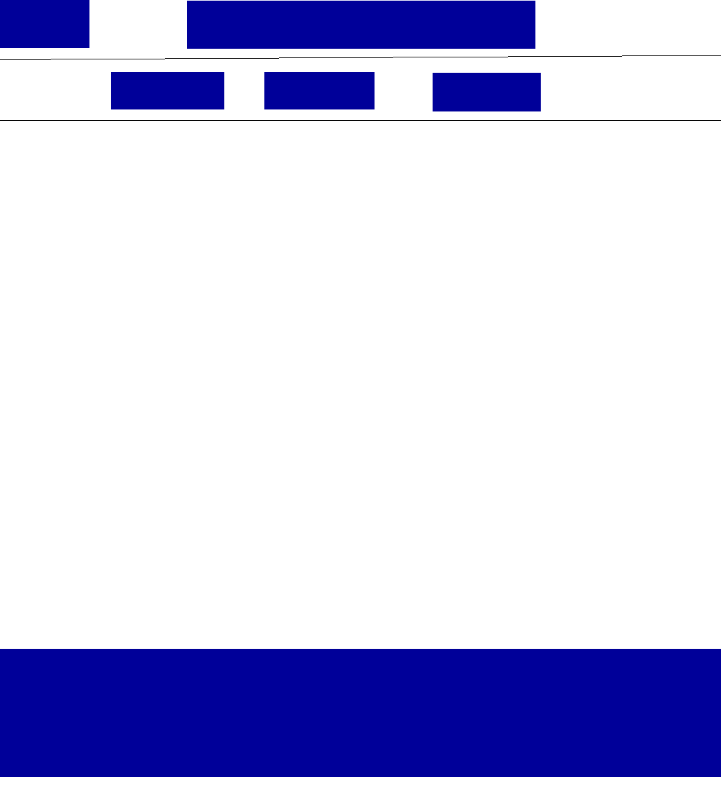
Why we made this
We picked wireframes from our previous ideas because the pages and the other pages and homepage should look almost the same so we based our wiresframes off the other homepages.
Feedback
We discussed the pros and cons of the contact bar. It will allow people
to see the numberes and emails faster. However,the contact bar
on the bottom is not really used because parents, our audience, ususally
do not know that the thing on the bottom is the contact bar.
Templates
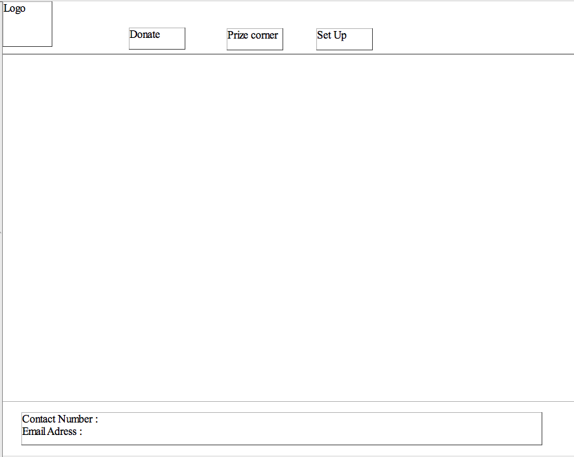
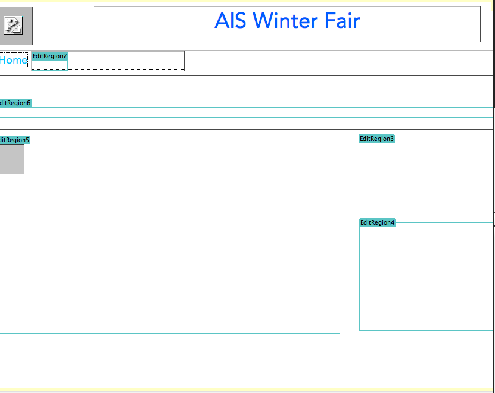
Picking our template
We decided that the bar on the bottom was not really needed and the second one is more organized, so we used the second one as our template
Look and Feel
The message of our website giving out overall is that we want
the audience, parents, to look at it and feel that it is simple and easy to use with simple one click sign ups.
The theme of our background is blue because it gives a relaxing effect. Our words are in
Homepage
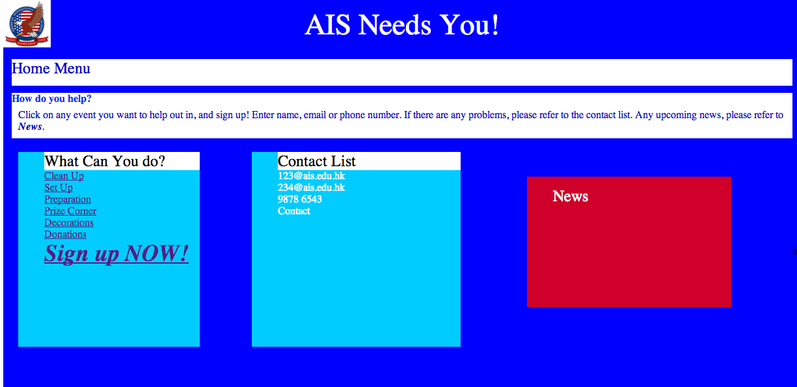
Feedback from myself
- newsbar is not really needed.
- There is a logo word on the side of the picture, need to be deleted
- Need to get and properly link AIS logo from group mates.
Feedback by others
- Excellent planning: very organised
- Color contrast is VERY bad
- Functional, but the website could be more organised
New Homepage
 Compare and contrast making buttons with Dreamweaver and fireworks
Fireworks
-Pros
Easy to make
Looks realisitic and allows people to know to click on it
-Cons
Tedious
When want to change an effect, need to redo it from fireworks then import it again.
Javascript needed to make it work
Cant see where the link will bring you to when you try to drag the button. The button only stays as an image.
Flowchart
Compare and contrast making buttons with Dreamweaver and fireworks
Fireworks
-Pros
Easy to make
Looks realisitic and allows people to know to click on it
-Cons
Tedious
When want to change an effect, need to redo it from fireworks then import it again.
Javascript needed to make it work
Cant see where the link will bring you to when you try to drag the button. The button only stays as an image.
Flowchart
.png) We have amended our flowchart by a bit. The preparation is gone because while we were working on our project,
we noticed that the perparation was exactly the same thing as set up.
Objectives
We have amended our flowchart by a bit. The preparation is gone because while we were working on our project,
we noticed that the perparation was exactly the same thing as set up.
Objectives
- For Elementary Parents who have time to spare, and would like to make a commitment to AIS to sign up for winterfair volunteer (Yes)
- For Elementary Parents who have time to spare, and would like to make a commitment to AIS to easily sign up (Yes)
- For Elementary Parents who have time to spare, and would like to make a commitment to AIS to know that this is from AIS by adding AIS logo (Yes)
- For Elementary Parents who have time to spare, and would like to make a commitment to AIS to contact PTA if help is needed (Yes)
- For Elementary Parents who have time to spare, and would like to make a commitment to AIS to know that PTA needs their help (Yes)
Yes we have completed all these objectives. However, the easiness for parents to sign up is still not enough 7/10. There are too many pages that my lead the parents to something they do not understand
Dreamweaver
-Pros
Easy to make
Effects can be changed around whenever wanted by changing the a:hover/a:visited in css
Can see what link and page it is going to when dragged
Internal linking making it easy for users to link to what they want
-Cons
Does not look like a button, people might not know if it is clickable.
It does not have any 3d effects.
Looks like plain text
Fireworks
- Pros
Easy to make
Can make 3d buttons and effects onto the buttons easily
Easy to bring into Dreamweaver
-Cons
Requires javascript in order it to work
There is no internal linking